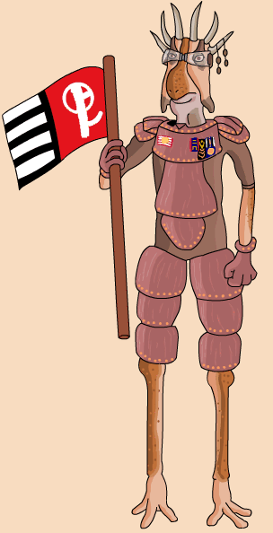

|
Classification |
Nosaurian |
|
Gender |
Male |
|
Height |
5'0'' |
|
Home World |
New Plympto |
|
Podracer |
Keizaar-Volvec KV9T9-B Wasp |
Clegg is a reporter for Podracing Quarterly. He gets inside scoops for his articles by participating in the events himself. Clegg got his job as the 'inside perspective' without any previous experience. He is not taken seriously by his fellow racers, and for good reason; Despite his excellent podracer, Clegg is a poor pilot. Clegg is sponsored by Biscuit Baron, a TaggeCo-owned restaurant string frequently advertised within Podracing Quarterly.
Clegg left New Plympto at a young age after the Republic put a species of arboreal crab-spiders, whose eggs were used to make intoxicants, on a "protected species" list. This turned many Nosaurians into poachers overnight.
At the Boonta Eve Classic, Clegg Holdfast sidled up next to Sebulba near the start of the second lap. Sebulba responded by flashing his vents at Clegg's podracer, igniting the engines and forcing Clegg to crash. The official race standings show that Clegg Holdfast finished in 7th (with a time of 28.55:581). This is because Clegg used his journalism position to tamper with the results so he could not only save his wavering career, but also to protect Sebulba from being eliminated from the circuit. Removing podracing's biggest crowd pleaser would have hurt Podracing Quarterly's business.